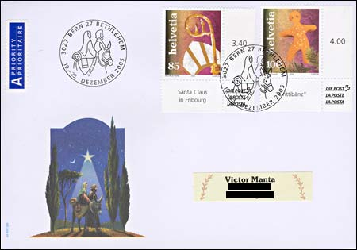
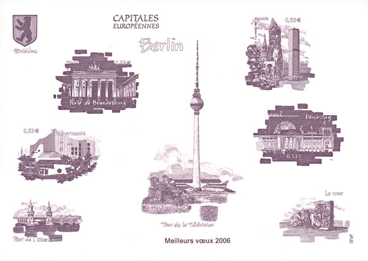

Nowadays, St. Nicholas's gifts include bread baked in the shape of a man with legs apart, called "Grittibänz", "Grättimaa", "Elggermaa", "Chlaus" or "petit bonhomme", depending on the region. The term mostly used in Western Switzerland "Benz/Bänz" is the short form of the Christian name Benedikt, while Gritti/Grätti" refers to the figure's legs being apart. "Ellgermaa" refers to the place Elgg in Canton Zurich, where a baker is said to have produced bread 100 years ago around Christmas time. Source: Focus on Stamps, 4/2005.

The "Grittibänz" stamps on the covers shown above were cancelled at the 3027 Bern 27 Bethlehem post office, a free service offered each end of the year by the Swiss Post. The first letter was sent by the philatelic association, and the second is self-addressed. This one is over franked but it is nice thanks to the labeled selvages.

The above interesting engraving (France, European Capitals, Berlin, issued 2005), with the "Meilleurs Voeux 2006" = "Best Wishes" text being printed on it, arrived in February 2006. Welcome to my collection!
Links to Christmas on Stamps pages found on this site:
Stamps Christmas Tree, with greetings from 38 stamps collectors, in 16 different languages
Liechtenstein, Christmas 2001. Medallions in Wooden Frames
Liechtenstein, Christmas 1979. Embroideries.
|
Created 12/11/05. Revised:
03/01/06. Copyright © 2005 - 2006 by Victor Manta, Switzerland. All rights reserved in all countries. |
|